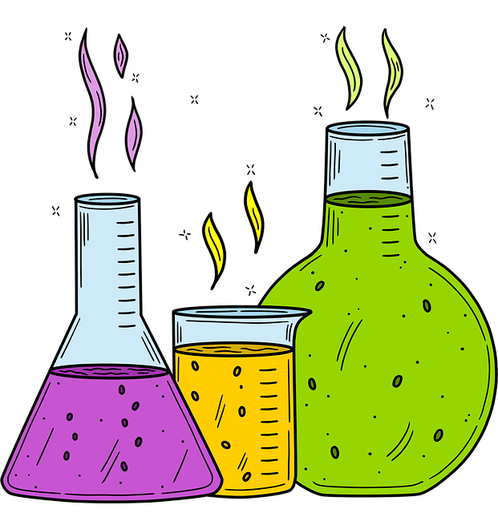
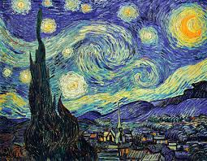

Știința

alt="Imagine reprezentativă pentru ştiinţă">
Cuvântul „știință” provine din latinescul scientia, care înseamnă „cunoaștere, înțelegere”. Este un substantiv derivat din latinescul sciens, care derivă indiscutabil din latinescul sciō, participiul prezent scīre, care înseamnă „a cunoaște”.
Link către un articol științific
Link către un video educațional
Arta

alt="Imagine reprezentativă pentru artă">
Istoria artei este adesea povestită ca o cronologie a capodoperelor create în timpul fiecărei civilizații. Ea poate să fie astfel încadrată ca o poveste de înaltă cultură, epitomizată de Minunile Lumii.
Sport
Un sport reprezintă o activitate de natură fizică ce poate implica și competiții. Totodată, sportul este o activitate care influențează stilul de viață, sănătatea sau personalitatea unui om.
Sporturile se pot categorisi în individuale (de exemplu atletism, haltere, tir sportiv) sau de echipă (de exemplu baschet, canotaj).